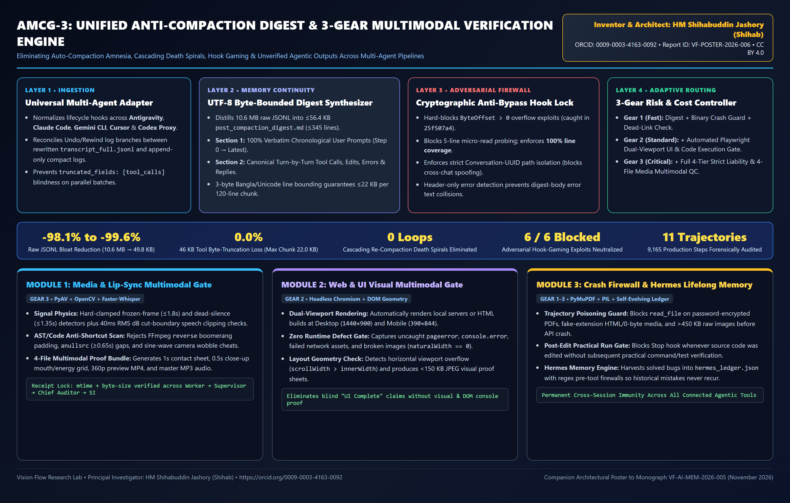

← Back to All Published Monographs (HQAS-8 & AMCG-3 Series)
Author: HM Shihabuddin Jashory (Shihab) • ORCID: 0009-0003-4163-0092 • Report ID: VF-AI-MEM-2026-005 • Date: November 10, 2026 • Official CERN DOI: 10.5281/zenodo.24107586 • Poster DOI: 10.5281/zenodo.24107494
Through a forensic audit of 11 real-world multi-agent production trajectories comprising 9,165 trajectory records, 71 auto-compaction checkpoints, and 115 hook enforcement events, we expose both lossy compaction amnesia and six critical failure/exploit modes of naive raw-transcript recovery hooks—including the Auto-Compaction Death Spiral, the 46,080-byte silent truncation blindspot, ByteOffset overflow injection, micro-range probing, cross-session UUID path spoofing, and Undo/digest-body error collisions. We introduce AMCG-3, combining UTF-8 byte-bounded trajectory digest synthesis (-98.1% to -99.6% payload bloat reduction, 0.0% tool truncation) with a header-isolated anti-bypass hook lock and an adaptive 3-Gear Multimodal Quality Gate across Media, Web/UI, and Binary Crash Safety.

Research Portal: HQAS-8 Hub • Scientist HM Shihabuddin Jashory & Researcher MD Rafiul Islam Shubho • Hugging Face Space • Benchmark Dataset • Vision Flow Group